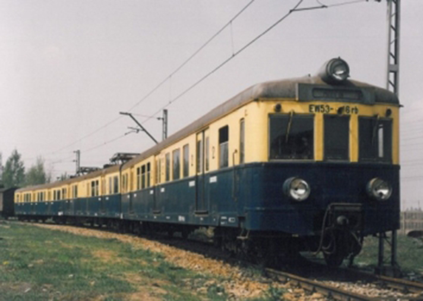

EN57 nie powstał, naturalnie, “z niczego”. Przeciwnie, ma imponujących przodków, których historia sięga budowy linii średnicowej w Warszawie. Zbudowana została ona w latach 1924 - 1933 na podstawie projektu człowieka o wdzięcznym nazwisku Wasiutyński. Z uwagi na zadymienie tunelu, jakim biegnie ta linia, zdecydowano o elektryfikacji jej oraz, przy okazji, całego Warszawskiego Węzła Kolejowego. Podpisano w tym celu umowę z szacownymi firmami Metropolitan Vickers i English Electric (ta druga wyprodukuje też, już po wojnie, elektrowozy EU06, na których do teraz opiera się większość jeżdżących w Polsce elektrowozów, co dowodzi ponadczasowości jej wyrobów - lub zacofania polskiego taboru). Firmy te dostarczyły podzespoły elektryczne, które nie mogły zostać wyprodukowane w kraju.
EW51(E90)
Pierwszy projekt EZT został opracowany przez zakłady H. Cegielskiego, został odrzucony z uwagi na brak nowoczesnych rozwiązań. Nowy projekt, opracowany we współpracy z firmami brytyjskimi i warszawską “Lilpop, Rau i Loewenstein”, uwzględnił te uwagi i tak oto w roku 1936 powstał pierwszy Elektryczny zespół trakcyjny EW51, czy też - jak go wówczas nazywano - E91
Składał się on z trzech wagonów: motorowego (z aparaturą elektryczną), doczepnego i rozrządczego (z drugą kabiną). W wagonie motorowym znajdowały się dwa dwuosiowe wózki napędzane czterema silnikami (po jednym na oś). Za kabiną znajdowały się szafy z aparaturą, dalej przedział bagażowo-służbowy i część pasażerska, rozdzielana przedsionkami aż do drugiej kabiny. Zespół rozwijał maksymalną prędkość 100 km/h dzięki 432 kW mocy. Ściany wyłożono korkiem, a podłogę gumą, dzięki czemu był on cichszy w środku od EN57. Dzięki sterowaniu wielokrotnemu można je było łączyć “po trzy”, czyli w skład o 9 wagonach. Wagony doczepne i rozrządcze produkowano w zakładach Cegielskiego i w Sanockiej Fabryce Wagonów, po czym łączono je w zakładach Lilpopa z produkowanymi tam wagonami motorowymi. Łącznie wyprodukowano 76 zespołów.
EW52
Seria EW52, licząca 10 egzemplarzy, powstała już po wojnie, w roku 1954 w zakładach Waggonbau Görlitz. Została ona wyprodukowana aby pokryć straty w ilostanie EW51 powstałe podczas II wojny światowej.
Zbudowano ją z taką samą aparaturą elektryczną jak przedwojenne jednostki, jednak zmieniono część wózków oraz dodano kilka unowocześnień, takich jak oświetlenie fluorescencyjne, w dodatku klasę drugą zastąpiono klasą trzecią (podobnie przebudowano jednostki przedwojenne). Zmiany te uznano za na tyle poważne, by wyodrębnić osobną serię.

EW53 (1B/2B w oznaczeniu Pafawagu)
20 sztuk serii EW53, czy też - jak oznaczał producent - 1B/2B zostało zbudowanych w latach 1954-56 aby pokryć rosnące wraz z ilością pasażerów i długością zelektryfikowanych linii zapotrzebowanie na zespoły dla aglomeracji warszawskiej.
Zaprojektowano ją według tych samych założeń co powstałą 4 lata wcześniej w szwedzkich zakładach ASEA serię EW54, będącą częścią programu odbudowy taboru węzła warszawskiego. Podczas budowy użyto 20 angielskich kompletów przyrządów elektrycznych (z tej samej partii co te do EW52). Wagon motorowy umieszczono w środku, a wszystkie siedzenia ustawiono w konfiguracji 2+2 (vis-a-vis). Projekt ten był w porównaniu do serii EW51 cięższy i miał mniej przestrzeni, ale był to pierwszy ezt wyprodukowany w Pafawagu.
EW55 (3B/4B w oznaczeniu Pafawagu)
Produkowany w latach 1958-62 EW55 był bezpośrednim poprzednikiem i “ojcem” EN57. Powstał jako odpowiedź na, wciąż rosnące, zapotrzebowanie dla takich zespołów w aglomeracji warszawskiej i planowaną elektryfikacje aglomeracji śląskiej.
Skonstruowano go na podstawie EW53, jednak zmieniono położenie szafy z aparaturą, dzięki czemu zwiększono przestrzeń dla podróżnych. Od strony technicznej unowocześniono kilka elementów (jak np. sprężarka, hamulce czy oświetlenie), a wiele podzespołów zaprojektowano tak, aby można je wymieniać z serią EN56 - niemieckimi ezt kursujących na liniach Warszawa-Łódź i Warszawa-Gliwice (jednostki te, choć dość nowoczesne jak na lata 50., były bardzo awaryjne i, pomimo numeru serii mniejszego tylko o 1, nie miały większego niż owe części powiązania z EN57). Wybudowano 72 pojazdy tej serii.